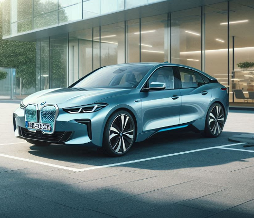
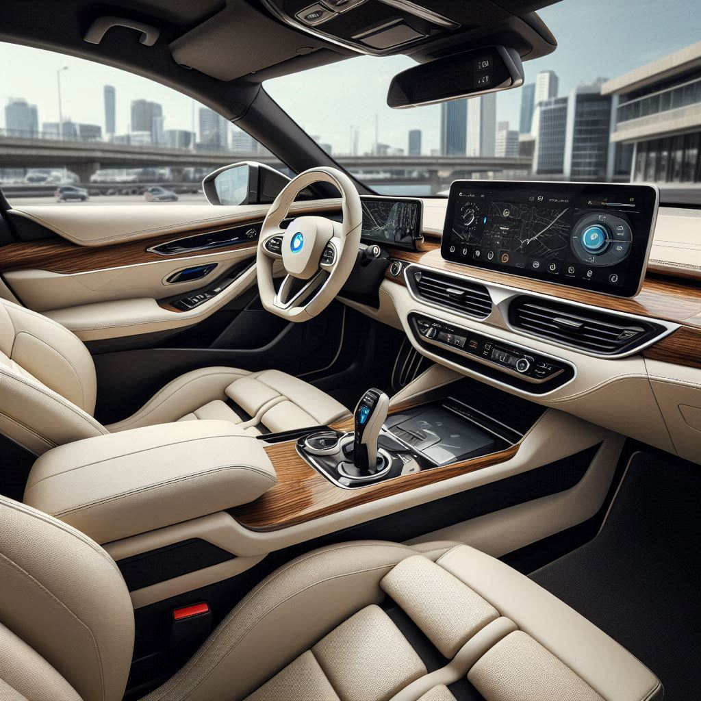
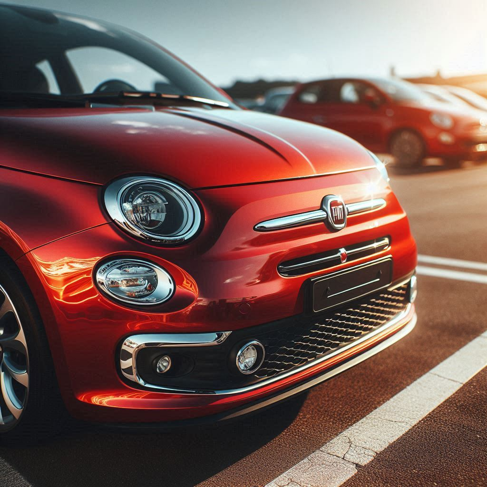
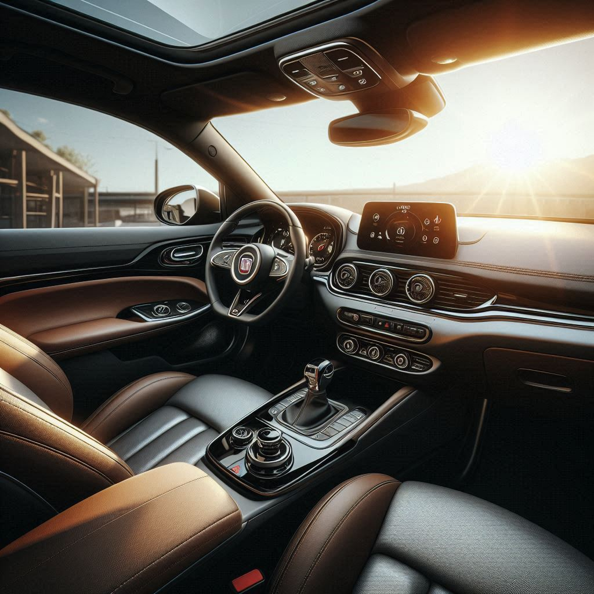
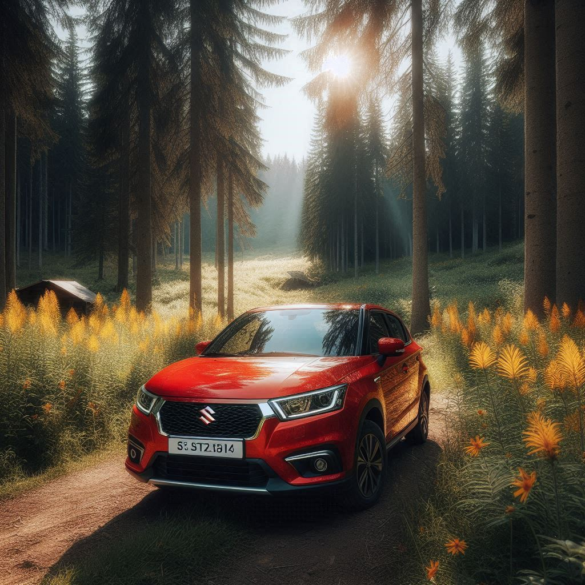
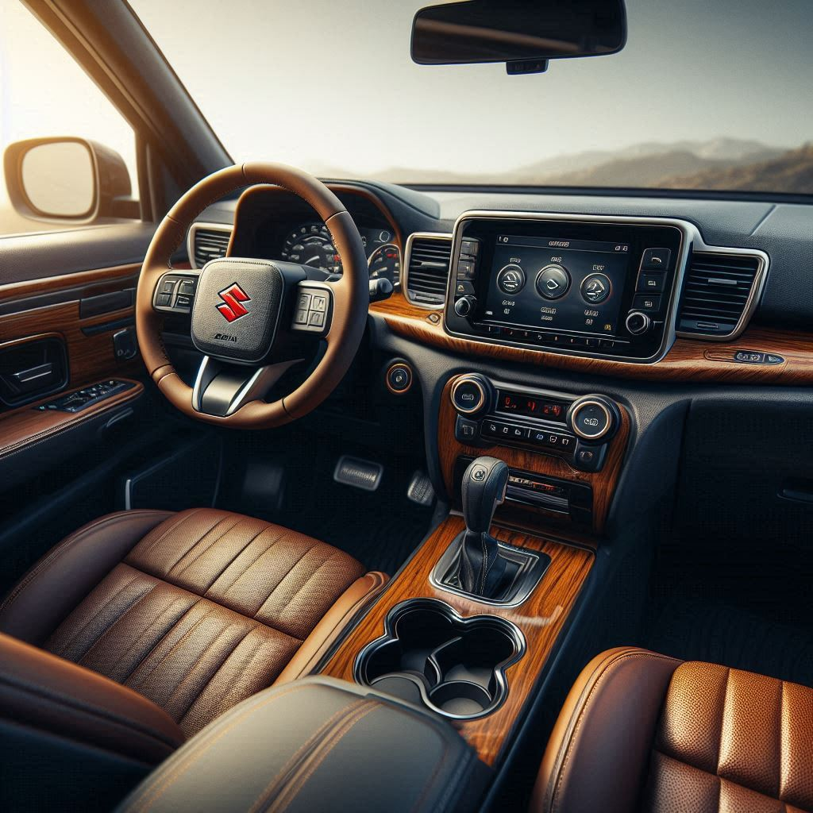
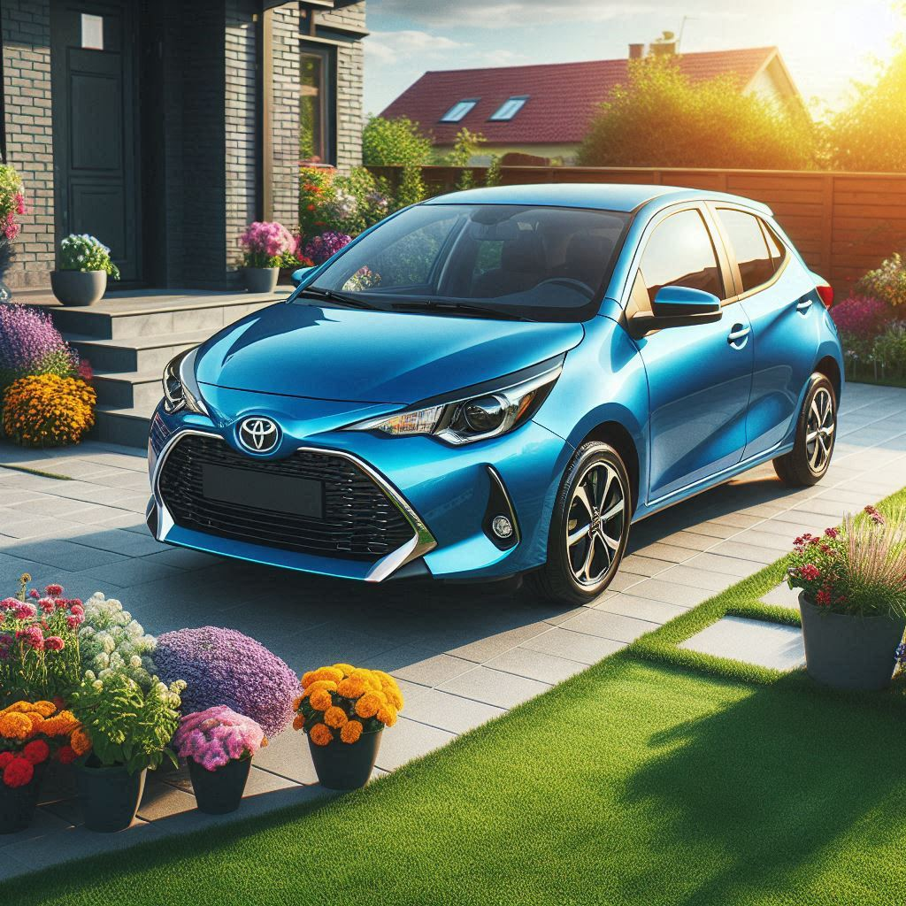
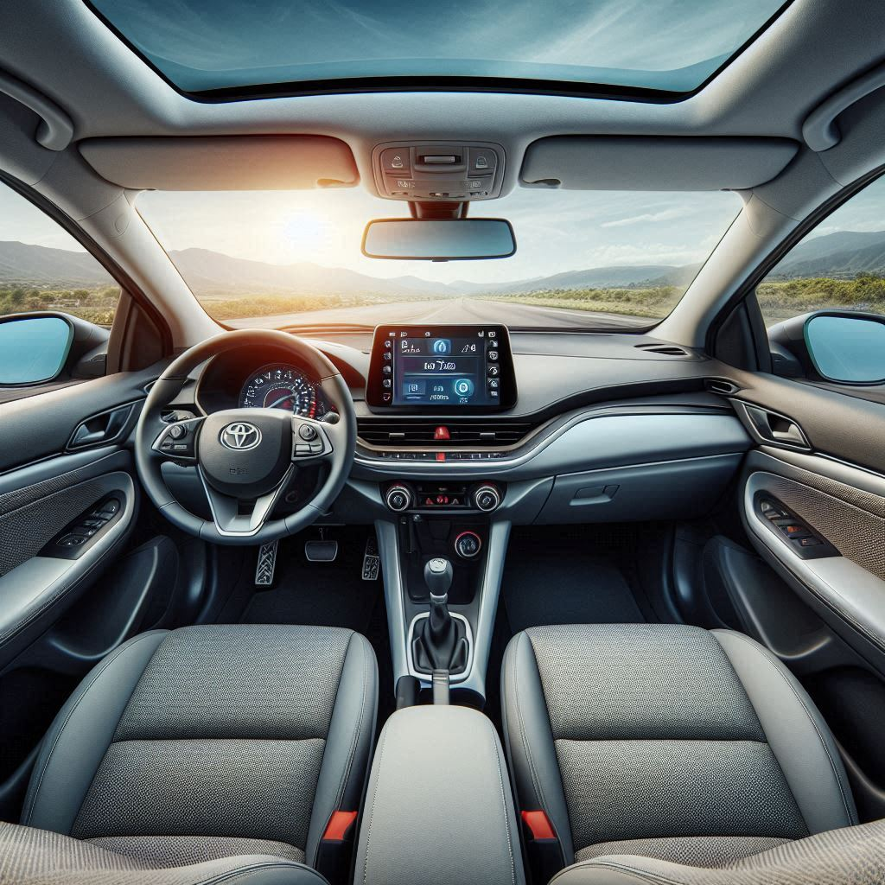
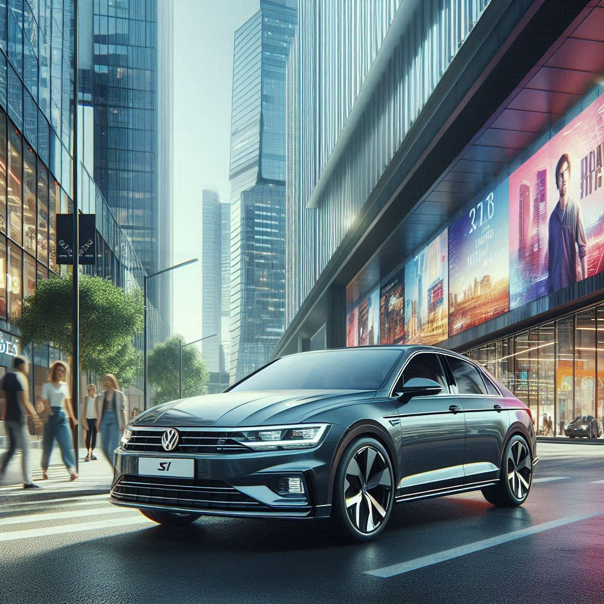
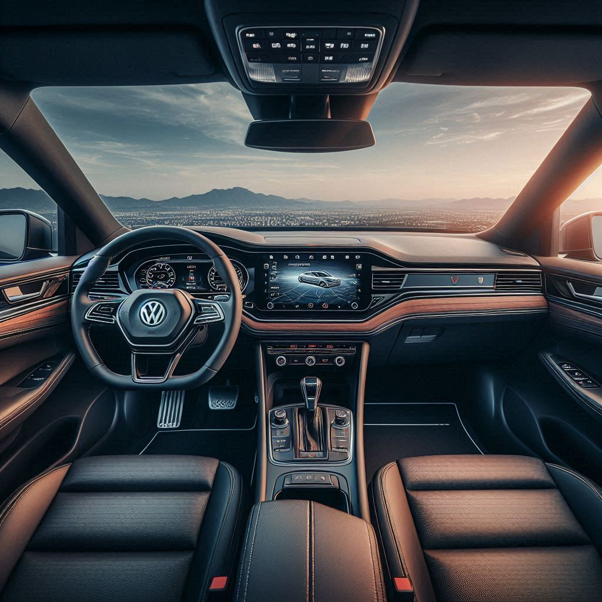

Cars That Are For Sale...
BMW i4
The BMW i4 is an all-electric luxury sedan that combines BMW's hallmark driving dynamics with advanced electric vehicle (EV) technology.It offers a blend of performance, luxury, and cutting-edge EV technology, catering to drivers seeking a high-quality electric vehicle experience.
 Price: Starts at R995,000
Engine options: Features a single rear motor with 335 horsepower.
FIAT
Fiat, an Italian automotive brand founded in 1899, is renowned for its stylish, compact, and practical vehicles. It continues to offer a range of stylish and practical vehicles, with a growing focus on electric and hybrid technology to meet evolving automotive trends.
 Price: Starts at R50,000
Engine options: 1.0 to 1.4 liters turbo
SUZUKI
Suzuki is a Japanese automaker known for its versatile range of vehicles, including compact cars, SUVs, and motorcycles. The brand is recognized for its reliability, affordability, and off-road capabilities. Suzuki continues to be a popular choice for drivers seeking reliable, practical, and affordable vehicles, with a focus on versatility and off-road capability.
 Price: Starts at R995,000
Engine options: Suzuki’s range includes small-displacement engines designed for efficiency and performance, suitable for city and highway driving.
TOYOTA
The Toyota Yaris is a versatile and reliable subcompact car known for its practicality, efficiency, and value. The Toyota Yaris is a well-rounded subcompact car that combines efficiency, practicality, and modern features, making it a popular choice for drivers seeking a reliable and economical vehicle.
 Price: Starts at R53,000
Engine options: Typically features a 1.5-liter 4-cylinder engine, delivering around 106 to 130 horsepower, depending on the market and specific model.
VOLKSWAGEN
Volkswagen is a German automaker renowned for its wide range of vehicles, from practical compact cars to luxury models and performance-oriented sports cars. Volkswagen continues to be a major player in the automotive industry, offering a diverse range of vehicles that blend quality, performance, and innovation to meet a wide array of customer needs.
 Price: Starts at R249,857
Engine options: Range from efficient small-displacement engines in compact models to more powerful engines in sportier and luxury variants.